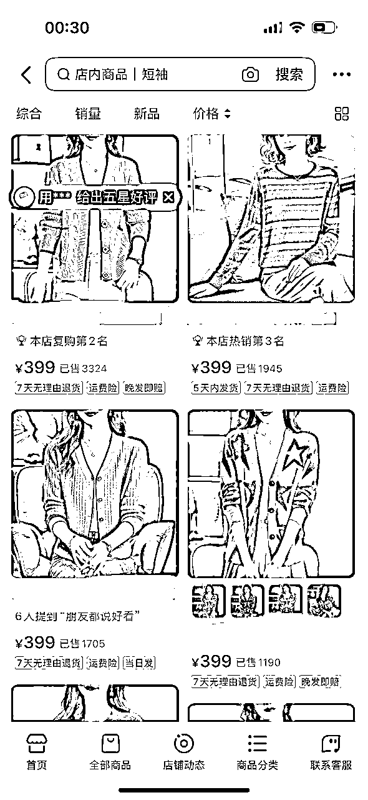
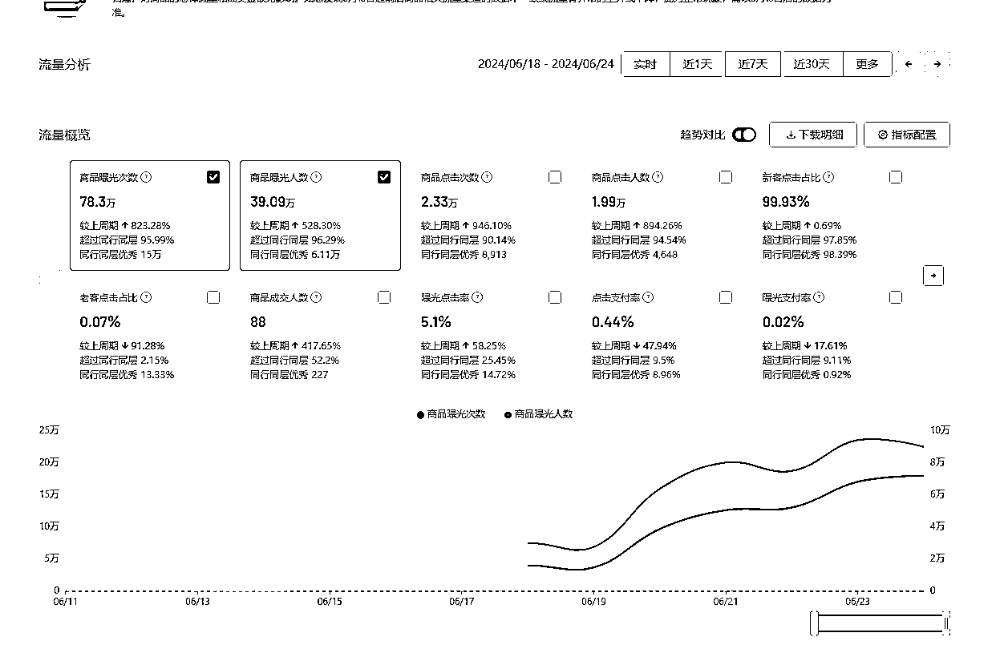
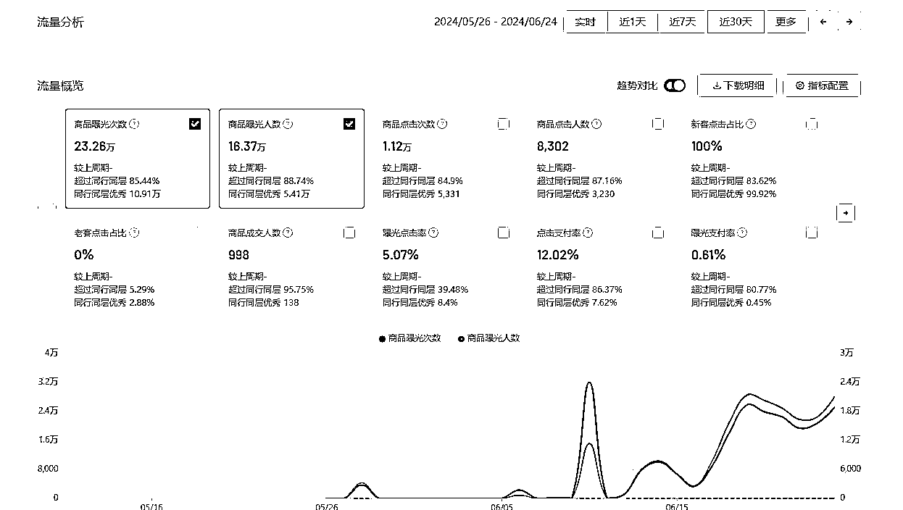
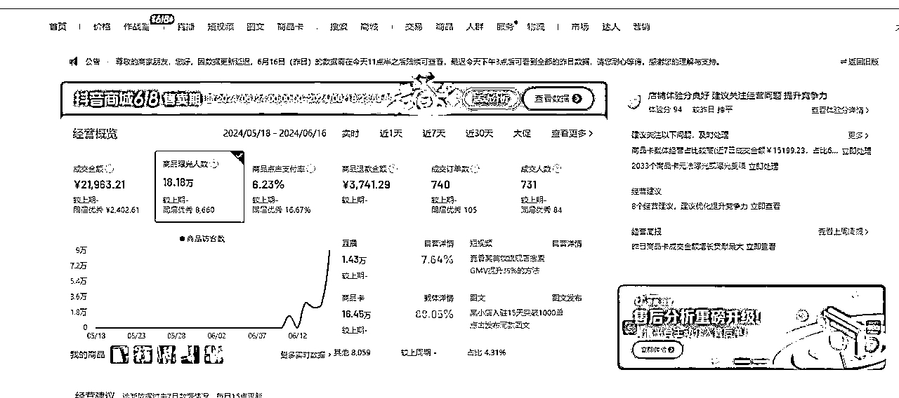
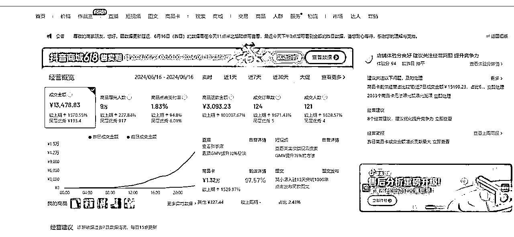

来源：https://shengcaiyoushu01.feishu.cn/docx/PNredYFRYo29yNxN5b2cdeFenng
大家好，我是安信。
今年是我在电商行业的第 8 个年头。一月也有三五百万 GMV，日均发货量 1000 多单。
和大部分正规军圈友不一样，我高一因为成绩不好感觉也上不了什么好大学就直接辍学了。我选择的第一份工作是送快递，每天扛货搬上搬下，14、15 年的时候很多住宅都没有电梯，就纯出卖体力赚钱。
在搬货的时候，我想着怎么赚更多的钱，头脑简单的想着加盟一家快递店轻松点，结果因为年纪太小没有辨别能力，加盟费被坑掉了 10 几万后又出来了。
学历太低也不好找工作，每天在网上看各种信息和投简历，海投了很多家公司后，终于有一家电商公司愿意收留我。
我就从杭州打包行李直接去到广州，从最底层干起，什么都干，从两三千偏客服执行，到一两万工资店铺运营，到最后最高一个月十几万月薪的运营负责人。很长一段时间每天都是干到 3-4 点下班，隔天睡醒又直接去公司。
干了差不多 2 年后，因为分钱有分歧加上我家里人希望我回杭州，我就出来自己开公司了，到现在还活得还可以，动态持有 50+ 抖音，20+ 天猫，300+ 淘宝店铺。
做电商应该知道，店铺数据都是会波动的哈。
创业的这些年很多人都问我怎么选项目，怎么把项目做起来。
所以我觉得就两点：
一是能吃苦。
上面轻飘飘的一段小爽文，其实过程是很多说出不来的受挫折，煎熬，日日夜夜选品研究店铺的过程，那时可没有生财有术这种平台大家愿意分享有的没的，纯靠自己摸索。
不过我相信在生财每一个赚钱的人都是这样，没有人可以轻松躺着赚钱，只不过大家希望互相打气描述的都是美好画面罢了，再多的资料再多的教练都不可能替你踩过所有的坑。
二是我会选赛道。
在选快递和做电商过程，我也看了不少项目信息，包括加入生财的这几年，但我始终以电商做主线。
因为我喜欢相对空间足够大，长期能积累可复制的项目。电商刚好都符合这三点，市场永远有买卖的需求，积累的项目能力和资源是持续可以累积和产生复利的，做到一定程度不断地复制就能赚钱。
说到这么多，回归下正题吧。
上个月生财问我最近有没有好的项目，我说我正在做抖音商品卡，做的还行，目前 10w GMV/天。坤汀说要不做个航海来带带大家，我答应了于是就有这么一个事儿。
商品卡是什么？
商品卡就是货架场景下展示商品信息的卡片，不用开播，也不用发短视频，即可获得商品和搜索推荐。用户通过点击商品卡，进入商品详情页，如果顾客下单，这笔订单就属于商品卡订单。如下图，和淘宝京东页面也没啥大区别。

这次航海是抖音小店（高客单），指的是做抖音开通店铺，选择高客单的产品，并利用商品卡的流量提升店铺商品曝光，从而出单盈利。
大家都知道，直播在抖音这个平台已经很卷很卷了，商家基本非常难出多高的利润，而直播电商给抖音的流量和 GMV 也到一个瓶颈期。
据我这边内部和外部信息来看，抖音会持续很长一段时间来改变这个情况，因此商品卡处于一个流量增长的开端。
虽然是起步阶段，但对我们中小玩家来说就是好机会，自然流量可以白嫖，但这个量也没大到大玩家想要入场，
为什么做高客单？是因为我和我很多同行都走了不少弯路，只要做低价（我自己会定义 150 块钱以下的）不管怎么算都是亏的，哪怕我各方面都压价到极致。这是我花了很多钱得出的教训，测算出的区间，所以只要店起了就一定要立马换高价品。
具体也可以看我上次的项目实操分享，你就明白为什么要做高客单了：《我在抖音做小店一年，只看利润不看成本差点亏了》
有人可能会担心说，618 刚过，电商又进入淡季了，是不是只能等双十一，现在做抖音商品卡还有机会吗？
不会，抖音流量扶持力度就是很大。
可以看到下面这个店（下面举例的都是我的不同店，如果有人用我的图就绝对是假的）都是 618 节日的尾端开始起，流量和购买人数一直呈现增长状态。没有直播，不需要达人，这个店照样可以获得 78.3 万次曝光 ，曝光人数达 39.09 万。

选品选的对，页面维护的好，点击支付率也可以到 12.02%

所以对于我们生财愿意花时间精力研究的年轻人刚刚好，起店和拿收入的速度不违反广告法来说应该是第二快的。
6 月 9 日开的新店，6 月 10 日做的体验分，13 号开始起飞，4 天成交额 2 万 1，得到的总曝光人数是 18.18 万

6 月 16 日当天起的新店。当日成交金额 1 万 3，利润率 60%

我能这么短时间做起来也是因为我做这行久了，电商积累的能力都是通用的，选品能力，供应链资源，店铺管理能力，人员配置经验，平台小二资源等等。这行就是越久越吃香，平台说难听以后也可以换，但是只要你能做店选品，全天下通杀是不是。
不过坦白来说，这个领域目前属于蛮荒状态也用不了多大的积累，零基础新手靠执行力，一两个月内赚一两千压力不大；但如果你是以前有一些电商经验的，执行到位了赚个几千块并不难。
如果现在有人问我怎么起拼多多和做天猫我会劝他没能力没本金的话慎重，你玩不过我们专业的。
但入行我们就选相对不那么卷的地方开始，能赚钱，低门槛，有红利的地方就更好了。当然说这么多，如果本身你就做过电商，更建议做抖音小店这个项目，真的，你做完一定会回来感谢我，到时记得给我大方的发个红包啊。
说了这么多，来说说报名抖音小店高客单航海门槛：
生财给了我很大的帮助（认识我的朋友应该都知道）哈哈哈，所以我觉得我挺愿意来做这次航海的教练来回馈下。第二是做电商的需要一个氛围和朋友交流的场合，有时多聊多看大家的打法，交个朋友也挺有意思。
如果你看到这里，还想试一次这个抖音风口的，那么留意下生财 7 月的星球报名帖（7 月 5 日 -7 月 9 日正式开启报名）。
这次人数限额 500 人，抖音的红利肯定会越来越少的，如果觉得合适的记得报名。
如果你对这个项目还有更多想要了解的信息，下周三（7 月 3 日）将会有一场对谈直播：《2024 年值得关注的电商新红利》
欢迎大家预约直播，到时候来一起聊一聊
就这样，7 月抖音小店（高客单）船上见